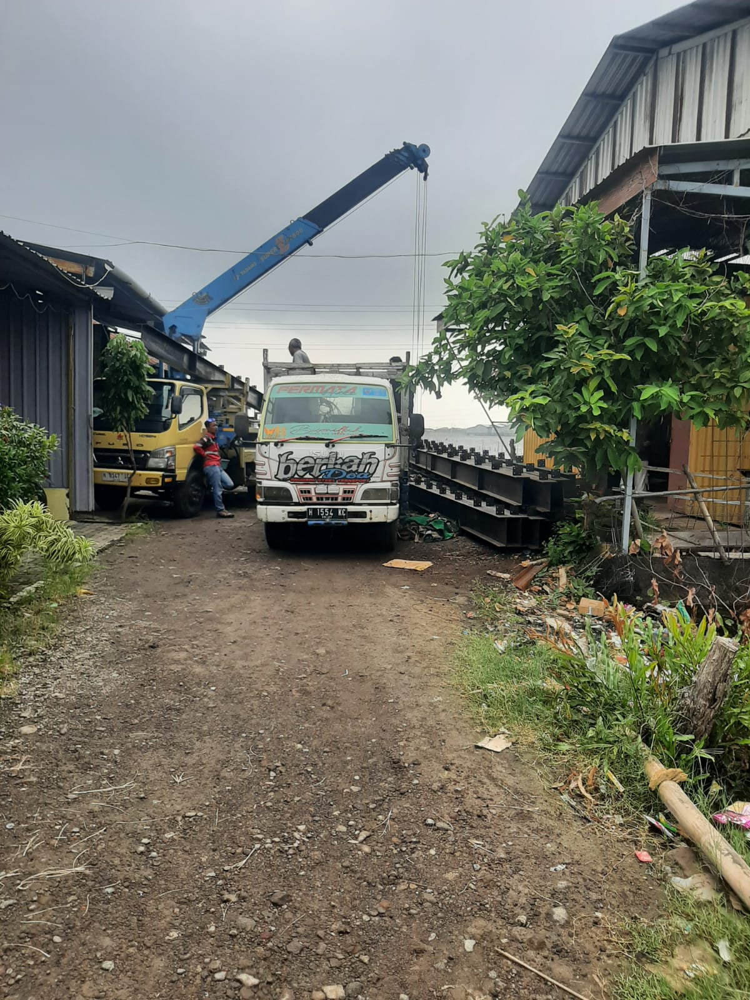
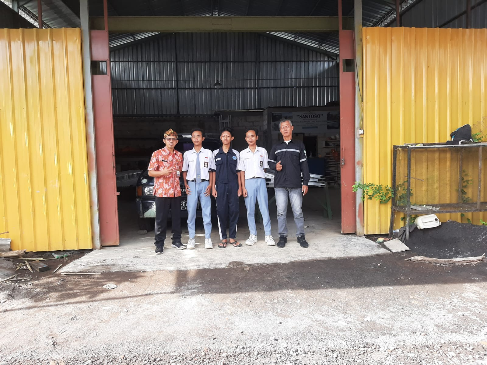
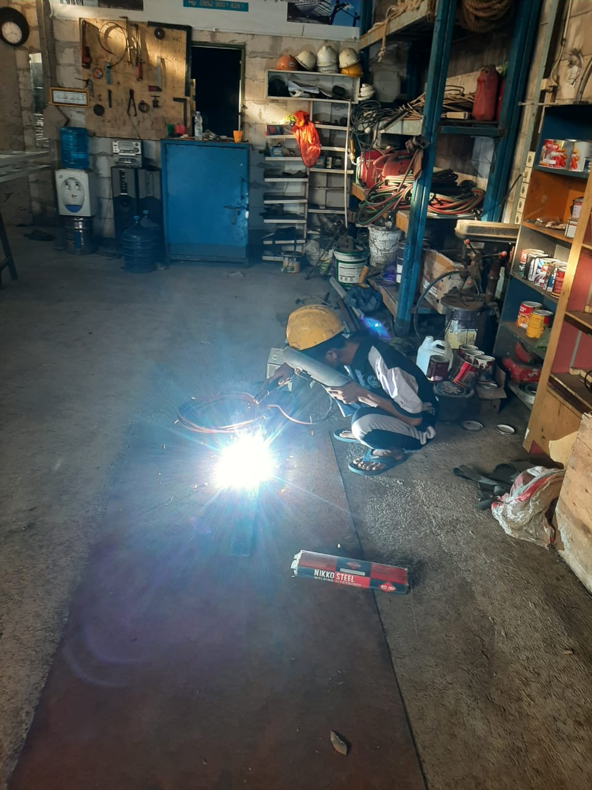
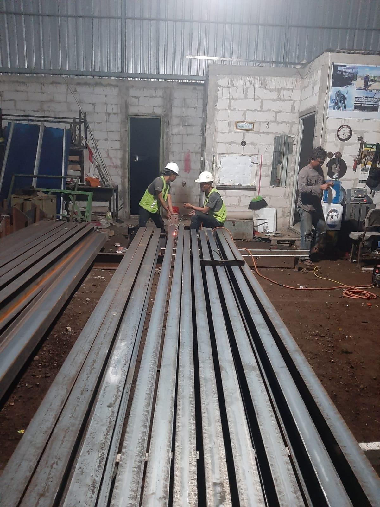
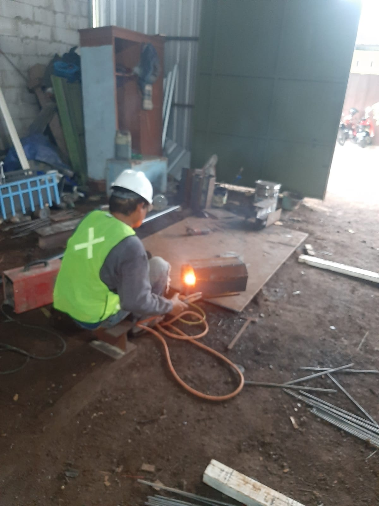
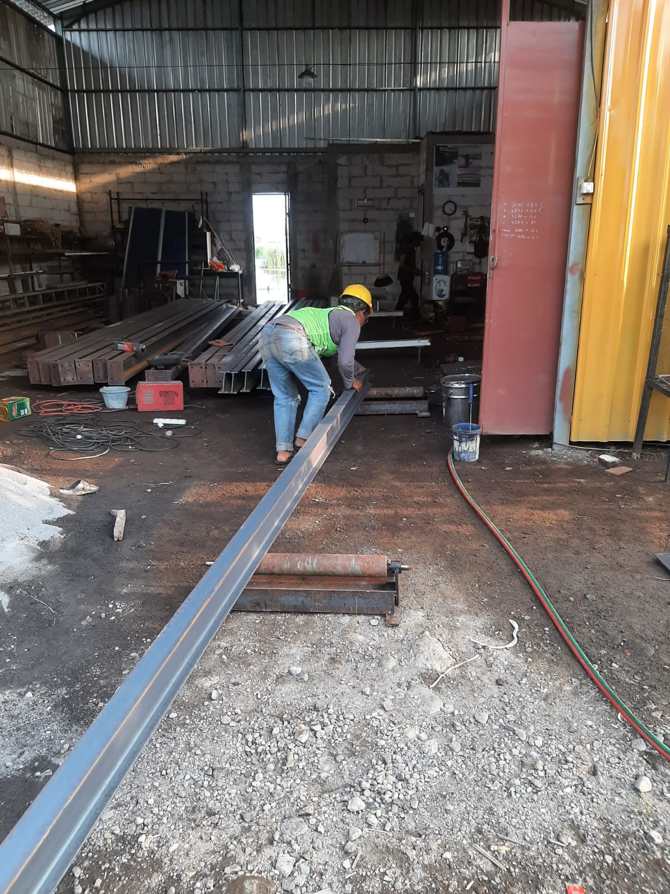
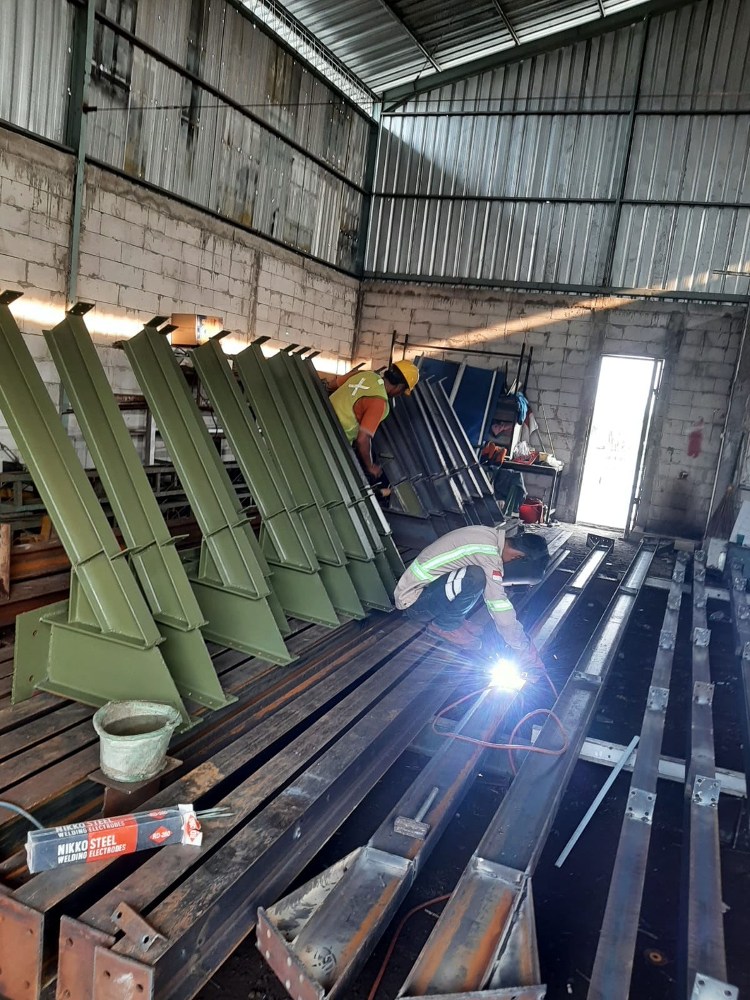
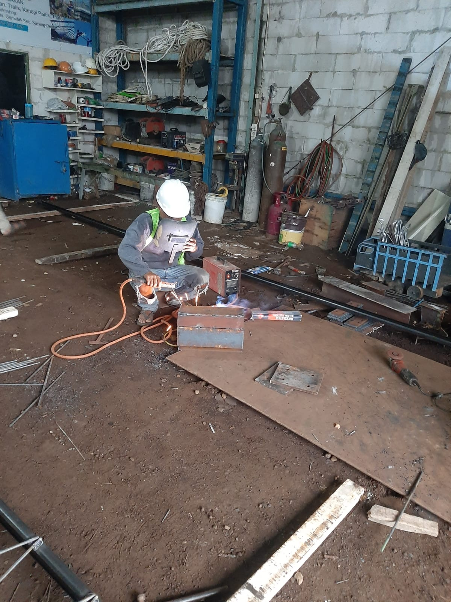

Aktivitas & Kegiatan Bengkel

Pemotongan Bahan Baku Baja
Proses pemotongan dan pengelasan material baja secara presisi oleh tenaga profesional.

Bahan Siap Dikirim
Proses memuat komponen struktur baja yang telah selesai diproduksi ke armada pengiriman.

Pembekalan Anak Magang
Sesi pengarahan industri mengenai standar keselamatan kerja dan pengecekan siku rangka konstruksi.

Praktik Pengelasan Siswa Magang
Siswa magang melakukan praktik pengelasan struktur besi di bawah pengawasan ketat teknisi ahli.

Pengerjaan Lembur Proyek
Aktivitas kerja lembur tim konstruksi di bengkel demi mengejar target penyelesaian proyek tepat waktu.

Pembuatan Ornamen Pagar
Proses pemotongan dan perakitan komponen besi untuk pembuatan ornamen pagar secara presisi.

Pengukuran & Pengecekan Material
Proses pengukuran panjang dan dimensi material besi secara teliti sebelum masuk tahap pemotongan.

Pengecatan & Pengelasan Komponen
Perakitan struktur baja melalui pengelasan kokoh yang dipadukan dengan pelapisan cat dasar anti karat.

Pengerjaan Las Struktur Baja
Proses pengelasan dan penyambungan komponen rangka besi sekunder yang dikerjakan secara fokus dan presisi.